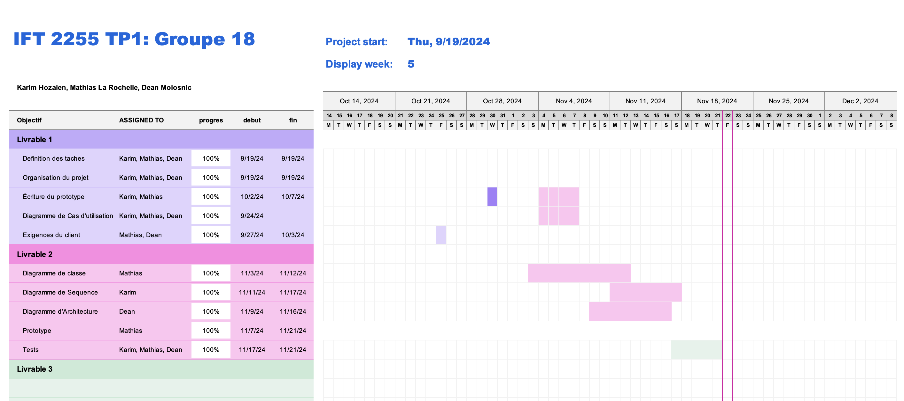

Cadre du projet
Introduction
L’application permettra aux usagers de voir les projets de construction dans la ville, de déposer des propositions de projet et de participer activement à la planification des travaux.
Le projet porte sur l'amélioration de la communication autour des perturbations liées aux travaux dans une ville, pour mieux informer les citoyens et réduire les impacts négatifs sur leur quotidien.
Problèmes à résoudre
- Amélioration de la planification des déplacements : Offrir aux résidents des informations précises et à jour sur les travaux en cours pour qu'ils puissent planifier leurs trajets de manière optimale et éviter les entraves.
- Participation citoyenne : Donner aux résidents la possibilité d'interagir directement avec les projets de travaux dans leur ville en proposant des idées et en choisissant des horaires adaptés pour minimiser l'impact sur leur quotidien.
- Réduction des impacts négatifs : Mieux informer les citoyens sur les perturbations, réduisant ainsi les frustrations liées aux travaux et améliorant la fluidité dans les zones affectées.
Échéancier

Hypothèses (optionnel)
Nous supposons qu'il existe 1 ou plusieurs administrateurs qui agissent comme acteur secondaire et qui contrôlent les diverses formes d'activités sur la plateforme.
Exigences
Après de nombreuses rencontres avec le client et une familiarisation avec les activités de recyclage et compostage, nous avons préparé un glossaire rassemblant les termes et expressions clés caractérisant l'environnement.
Glossaire
- Application MaVille
- Système qui permet la recherche et consultation des travaux et des entraves en cours et à venir dans la ville de Montréal. La gestion et la mise à jour de projets ou de requêtes de travail peuvent être fait (dépendamment du type de l'utilisateur). En général, permet aux citoyens de la ville d'être au courant de ce qui se passe niveau construction à l'aide de plusieurs services qu'ils leurs sont offerts. L'application communique avec le répertoire officiel Info entraves et travaux.
- Intervenant
- Type d'utilisateur auquel un citoyen peut s'enregistrer en tant que. Uniquement ceux possédant un identifiant fourni par la ville peut s'identifier en tant qu'intervenant. Généralement, ces gens sont des ingénieurs ou des chargés de projets au publique, privée ou en tant que particulier.
- Résident
- Type d'utilisateur auquel un citoyen peut s'enregistrer en tant que. Tout le monde peut se créer un tel compte car il ne nécessite pas d'information fourni d'un tier parti.
- Projet/Travail
- Objectif de travail qu'un intervenant a proposé ou veut proposer à la ville. Ces travaux sont donc assignés à la ville aux compagnies de construction qui veulent l'entreprendre. La création de projet peut seulement être fait par les intervenants. Les informations obligatoires doivent être
- Identifiant de la ville
- Numéro à 8 chiffres fourni par la ville aux intervenants à des fins d’authentification.
- Informations personnelles
- Pour les 2 acteurs ‚Üí nom complet, adresse courriel, mot de passe.
Propre au résident → date de naissance, numéro de téléphone (optionnel), adresse résidentielle.
Propre à l’intervenant → type d’entreprise, identifiant de la ville. - Entraves
- Obstacles dûs à des travaux et qui perturbent la circulation des piétons, cyclistes et conducteurs.
- Requête de travail
- Demande faite à la ville sous forme de formulaire en ligne pour une proposition d’un aménagement d’une zone, restructuration d’une voie, réparation d'infrastructures, etc. (voir les types de travaux dans la liste de souhaits).
- Notifications personnalisées
- Système de notifications choisies préalablement par l’utilisateur → rue, quartier, ville.
- Planification participative
- Processus permettant aux résidents de donner leur avis sur les heures de préférence de l’activité d’une zone de travaux.
- Status des travaux/projets
- Prévu : projet de travaux qui a été soumis mais n'a pas encore commencé.
En cours : travaux qui sont actuellement en cours de réalisation.
Terminé : travaux qui ont été complétés. - Suivi d’une requête
- Disposition d’un système externe au logiciel principal pour permettre aux résidants/intervenants de suivre l’évolution de leur recommandation/projet demandé à la ville.
- Travaux publics
- Projets de construction gérés par la Ville.
- Travaux privés
- Projets de construction gérés par une ou des entreprises privées.
- Horaire des travaux
- Plage horaire généralement défini de manière hebdomadaire et partagé aux résidents qui ont les notifications personnalisées de cette zone.
- Chantier
- Toute zone où des travaux s’effectuent.
Cas d'utilisation

Notes à propos du diagramme
- Choix des acteurs : Deux acteurs, soit les résidents et les intervenants, vont utiliser l'application. Nous avons ajouté la généralisation "Utilisateur" parce que
le processus de connexion est le même pour ces deux là. Nous avons aussi un administrateur (qui est de la ville) qui va modérer la plateforme et assurer que les identifiants des intervenants sont valides.
- Choix des relations : Nous avons deux relations <<extend>> qui démontrent que le CU d'extention peut seulement être exécuté
si le CU de base a été exécuté en premier.
Scénarios
- Notes
- Petite spécification : tous les CUs contiennent implicitement la précondition qu'un utilisateur doit être connecté à un réseau sans fil et avoir téléchargé l'application.
Scénario principal
- Une fois l’application ouverte, il sélectionne l’option “S’enregistrer en tant que résident”.
- Le résident entre ses informations personnelles.
- Le système valide les informations.
- Ce dernier confirme que le résident est désormais bien inscrit.
Scénarios alternatifs
Scénario principal
- L’intervenant ouvre l’application MaVille.
- Il sélectionne l’option “S’enregistrer en tant qu’intervenant”.
- L’intervenant entre ses informations personnelles.
- Le système valide les informations.
- Le système confirme que l’intervenant est désormais bien inscrit.
Scénarios alternatifs
Scénario principal
- L’utilisateur ouvre l’application MaVille.
- Il clique sur l’option ''Paramètres utilisateur''.
- Il modifie le paramètre de son choix.
- Il confirme le changement.
- Le système confirme que les changements sont valides.
- L’utilisateur reçoit la confirmation que ses données ont été modifiées.
Scénarios alternatifs
Scénario principal
- L’utilisateur ouvre l’application MaVille.
- Il clique sur l’option Se connecter.
- L’utilisateur entre son adresse courriel ainsi que son mot de passe associé.
- Le système valide les informations.
- Le système regarde dans la base de données à quel type de compte le courriel est associé.
- L’utilisateur est amené à la page d’accueil de son type de compte (résident ou intervenant).
Scénarios alternatifs
Scénario principal
- Le résident se connecte à la plateforme à l’aide de ses données personnelles.
- Le système apporte le résident à la page d’accueil dédiée aux résidents.
- Ce dernier sélectionne l’option d’affichage de consultation des travaux.
- Des options de filtrage lui sont proposées afin qu’il puisse affiner sa recherche.
- Le résident entre les informations qu'il désire.
- S'il y a des travaux selon les contraintes sélectionnées, le système les affiche.
Scénarios alternatifs
Scénario principal
- Le résident se connecte à la plateforme à l’aide de ses données personnelles.
- Le système apporte le résident à la page d’accueil dédiée aux résidents.
- Ce dernier sélectionne l’option d’affichage ''Évaluer des travaux''.
- Le résident sélectionne les travaux qu'il souhaite évaluer.
- Le résident donne une note et des commentaires.
- Le résident envoie son évaluation.
Scénarios alternatifs
Scénario principal
- Le résident sélectionne l’option d’affichage de recherche des travaux.
- Des options de filtrage lui sont proposées afin qu’il puisse affiner sa recherche.
- Le résident entre les informations qu'il désire.
- Le système affiche les travaux selon le type de filtrage et informations entrées.
Scénarios alternatifs
Scénario principal
- Le résident se connecte à la plateforme à l’aide de ses données personnelles.
- Le système apporte le résident à la page d’accueil dédiée aux résidents.
- Ce dernier sélectionne l’option ''Participer à la planification des travaux''.
- Le résident selectionne les travaux en question.
- Le résident écrit ses préférence.
- Le résident envoie ses préférences.
Scénarios alternatifs
Scénario principal
- Le résident se connecte à la plateforme.
- Il sélectionne l'option "Soumettre une requête de travaux".
- Le résident remplit les champs requis (type de travaux, localisation, etc.).
- Le résident soumet la requête.
- Le système enregistre la requête et l'envoie aux autorités compétentes.
Scénarios alternatifs
Scénario principal
- L'utilisateur active les notifications dans les paramètres de son profil.
- Le système enregistre cette préférence.
- Lorsqu'un événement pertinent se produit (ex : nouveaux travaux, mise à jour de travaux, etc.), le système envoie une notification à l'utilisateur.
- L'utilisateur reçoit la notification sur son appareil (mobile, email, etc.).
Scénarios alternatifs
Scénario principal
- L'utilisateur se connecte à son compte.
- Il sélectionne l'option "Suivi de mes problèmes signalés".
- Le système affiche la liste des problèmes signalés et leur statut (en cours, résolu, etc.).
- L'utilisateur peut consulter les détails de chaque signalement.
Scénarios alternatifs
Scénario principal
- L’intervenant se connecte à l’application.
- Il sélectionne “Soumettre de nouveaux travaux”.
- Il remplit les informations requises : titre, description, type de travaux, zone affectée, date.
- Il soumet le projet pour approbation.
Scénarios alternatifs
Scénario principal
- L’intervenant se connecte à l’application MaVille avec ses identifiants.
- Il accède à la section "Consulter les préférences des résidents".
- Le système affiche la liste des préférences soumises par les résidents pour la planification des travaux.
- L’intervenant lit les préférences et, si nécessaire, en sélectionne certaines pour épingler.
- Le système enregistre les préférences épinglées pour une consultation future.
Scénarios alternatifs
Scénario principal
- L’intervenant se connecte à l’application MaVille avec ses identifiants.
- Il accède à la section "Voir les requêtes de travaux".
- Le système affiche la liste des requêtes de travaux soumises par les résidents.
- L’intervenant sélectionne une requête en fonction de ses compétences ou de son intérêt.
- Il soumet une proposition en fournissant les détails nécessaires (coût, délai, etc.).
- Le système enregistre la proposition et envoie une notification au résident concerné.
Scénarios alternatifs
Scénario principal
- L'intervenant se connecte à l'application MaVille avec ses identifiants.
- Il accède à la section "Projets de travaux" et sélectionne un projet en cours.
- Il met à jour les informations du projet, comme la description, la date de fin prévue ou le statut (parmi les options disponibles).
- Il valide les mises à jour.
- Le système enregistre les modifications et notifie les résidents concernés.
Scénarios alternatifs
Scénario principal
- L'admin se connecte à l'application MaVille avec ses identifiants en mode Admin.
- Il accède à l'onglet "Signalements".
- L'admin consulte la liste des signalements soumis par les résidents.
- Il lit un signalement et, une fois lu, le système le marque comme "lu".
- Si le signalement nécessite une action, l'administrateur prend les mesures appropriées (par exemple, attribuer à un intervenant ou marquer comme "Urgent").
Scénarios alternatifs
Diagramme d'activités
Diagramme d'activités principal

Notifications de travaux

Recherche et consultation de travaux

Signaler un problème

Soumettre une requête

Analyse
Risques
- Sécurité : L’application pourrait être vulnérable à des attaques qui mettent en danger son utilisation ainsi que les données des utilisateurs.
Solutions: Protection des données et maintenance 24/7. - Manque de scalabilité et de performance: L'application pourrait ne pas être en mesure de supporter une augmentation du nombre d'utilisateurs ou des volumes de données importants, entraînant des problèmes de performance, tels que des ralentissements ou des crashs.
Solutions: Mettre en place des tests de charge pour identifier les limites de performance, optimiser le code pour améliorer la gestion de la mémoire et la vitesse de traitement. - Communication inefficace: Une mauvaise communication entre les membres de l’équipe de développement peut entraîner des malentendus et des retards.
Solutions: Faire des rencontres hebdomadaires pour faire le point et se mettre à jour. - Dépendances logicielles obsolètes ou incompatibles: L'application pourrait dépendre de bibliothèques ou de frameworks externes qui deviennent obsolètes ou qui ne sont pas compatibles avec les futures versions des systèmes d'exploitation ou des autres outils, risquant de rendre l'application instable ou inutilisable à long terme.
Solutions: Prévoir une gestion proactive des dépendances, en remplaçant les bibliothèques obsolètes ou incompatibles au fur et à mesure. - Vision différente du client et des développeurs: Les objectifs de l’application ont été mal définis ce qui pousse les développeurs à développer une application nonconforme aux exigences.
Solutions: Usage de prototypes, rencontres avec le client.
Besoins non-fonctionnelles
- Multilinguisme: Nous voulons rendre l’application plus accessible en l’offrant en plusieurs langues.
- Compatibilité: Nous voulons que l’application soit compatible avec les navigateurs populaires ainsi que les téléphones.
- Disponibilité: L’application doit être disponible 24/7 avec un taux de disponibilité élevé (>99%). Une surveillance des serveurs et des systèmes doit être en place pour minimiser les interruptions de service.
- Performance: L’application doit être capable de soutenir plusieurs milliers utilisateurs en simultané.
- Fiabilité: L'application doit être fiable et fonctionner sans bugs majeurs. Un système de logs détaillés et de surveillance doit permettre de détecter les erreurs et de les corriger rapidement.
Besoins matériels
Il y a beaucoup de choses à prendre en considération durant la conception de A à Z d'un projet d'une telle envergure. Tout d'abord, les utilisateurs installeront notre programme à partir du répertoire final GitHub du projet. Les prérequies seront listés. Ils n'auront qu'à le clôner sur leur machine. Puis, le lancement de l'application se fera à travers l'exécution d'un fichier .jar en ligne de commande. L'interface web s'ouvrira et communiquera avec la logique de l'application, les APIs et la DB sur un serveur local. Pour gérer les futures mises à jour, on fera des nouveaux `release` sur le répertoire officiel comme ça, les nouveaux utilisateurs pourront toujours obtenir la nouvelle version ou les anciennes s'ils le désirent. D'ailleurs, nous faisons la gestion des bugs à l'aide de simples déclarations `print` et de tests (avec JUnit). L'interface utilisateur qui sera offerte par notre application sera un simple front-end en HTML et un peu de CSS. Nous allons prioriser le fonctionnement correcte de l'application et ne pas perdre trop de temps sur des non-nécessité comme le design du site web. Aussi, cette interface sera plus efficace pour gérer l'affichage et l'entrée input d'un utilisateur (HTML offre des menus déroulants, des boîtes à cocher et pleins d'autres d'outils d'interactions personne-machine). Le coût de développement de cette application n'est pas financier car nous avons déjà les besoins physiques tels que les ordinateurs, la connection WIFI, les IDE pour le développement et les logiciels de modélisation UML. Il a été et continuera à être coûteux en temps.
Solution de stockage
L'architecture de stockage que nous avons finalement choisi (en date du devoir 2) est centralisée à travers une base de données SQLite. Cela permet d'éviter de créer un serveur qui "hostera" la DB. Cette DB se retrouve tout simplement dans un dossier qui sera à l'extérieur du fichier .jar comme ça, pas de compromis niveau chemin absolu des machines. Cependant, lorsque nous allons déployer le programme à grande échelle et faire une interface front-end, il va falloir que cela soit transposé sur un serveur. Nous allons donc mettre notre fichier SQLite sur un serveur avec une requête HTTP sur serveur local. Cependant, cette DB n'est pas fait pour supporter un grand nombre d'écriture (donc ne supporte pas bien après un grand nombre d'utilisateurs en même temps) mais cela n'est pas grâve car le scope de ce projet est petit.
Solution d'intégration
Nous utilisons une API pour échanger des données entre les différents services (front-end, back-end, gestion des utilisateurs, etc.). Un système d’authentification est également mis en place pour sécuriser l’application, gérer les utilisateurs et les connexions. Nous permettons aux utilisateurs de se connecter avec des comptes existants grâce à un algorithme de recherche des fichiers de données (JSON) des utilisateurs, et nous ferons de même lorsque nous passerons à MySQL. De plus, nous avons des solutions pour envoyer des notifications, en proposant des options par SMS et par courriel. Nous prévoyons également d'intégrer une carte interactive dans l’application pour permettre une visualisation des travaux dans une zone X. L'outil Info entraves et travaux de la ville de Montréal pourra être intégré à notre future application web pour avoir accès en temps réel aux mises à jour des travaux publics.
Conception
Architecture
Jetez un coup d'oeil à notre architecture de niveau 1 et 2!


Explications: L'application MaVille permet aux utilisateurs d'avoir accès à des informations relative aux travaux dans la ville ainsi que de formuler des demandes de travaux. Pour la développer, nous avons fait le choix de suivre le modèle MVC. Nous utilisons l'API de la Ville de Montréal pour obtenir les informations sur les travaux et les entraves. De plus, un service tiers est utilisé pour envoyer les notifications personalisées. L'utilisateur, qui interagit avec l'application via sa ligne de commande, envoie sa requête au controleur qui va la transmettre au backend pour exécution. Le backend a accès à une base de données pour y stocker et lire les données nécessaires au fonctionnement de l'application. Le backend va aussi s'occuper d'envoyer des demandes pour transmettre des notifications ainsi que de récupérer les informations de l'API de la Ville de Montréal. Plus de détails sur notre choix de design et le modèle MVC peuvent être trouvés dans la section Choix du design.
Diagramme de classes
Diagramme de séquence
Choix du design
Nous avons choisi de structurer l’application selon l’architecture MVC, en raison des avantages qu’elle offre en termes de modularité et de flexibilité. L’une des principales considérations a été de réduire le couplage entre les différentes parties de l’application tout en maintenant une forte cohésion au sein de chaque composant. En séparant les responsabilités — le modèle gérant la logique métier et les données, la vue s’occupant de l’affichage, et le contrôleur orchestrant les interactions — nous avons pu améliorer l’encapsulation. Cela garantit que chaque classe a un rôle bien défini et limite son impact sur le reste du système. À noter que ce choix a également été fait parce qu’il est souvent utilisé dans les projets web, où la vue est représentée par l’interface utilisateur front-end. Étant donné que nous nous orientons vers une telle interface pour le devoir 3, MVC était un excellent point de départ.
Implémentation
Implémentation du design
Lorsque le résident décide de consulter ou de rechercher un travail en particulier ou une liste de travaux et qu'il décide de filtrer, vous allez vous aperçevoir qu'il n'y a pas de menu à choix qui s'affiche mais plutôt une barre de recherche. Cette méthodologie a été choisie afin d'éviter la gestion des cas qui semblait déjà excessive dans notre application. Cependant, lorsque nous ferons une interface web au devoir 3, nous allons affichés en HTML un menu à choix pour faciliter la logique du code. Ceci dit, il faut faire attention quand on filtre car la logique derrière la compréhension du input de l'utilisateur n'est pas poussée. Exemple : disons que vous décider de filtrer par quartier/rue/type de travaux ; faites attention de ne pas faire d'erreur dans l'entrée. À noter que ce n'est pas case-sensitive ou accent-sensitive. Un exemple serait que je décide de chercher pour le type de travail CONSTRUCTION_RENOVATION et que mon input est "rénovation". La recherche devrait se faire cependant quelque chose du genre "rénovation construction" ou "consk ruction" ne marcherait pas. C'est le downside de l'implémentation pour le moment.
Tests unitaires
Si vous utilisez Visual Studio Code, les tests unitaires devraient généralement être
exécutable directement dans les fichiers tests. Voici un exemple :
Prototype
Pour exécuter le fichier JAR, faites en ligne de commande :